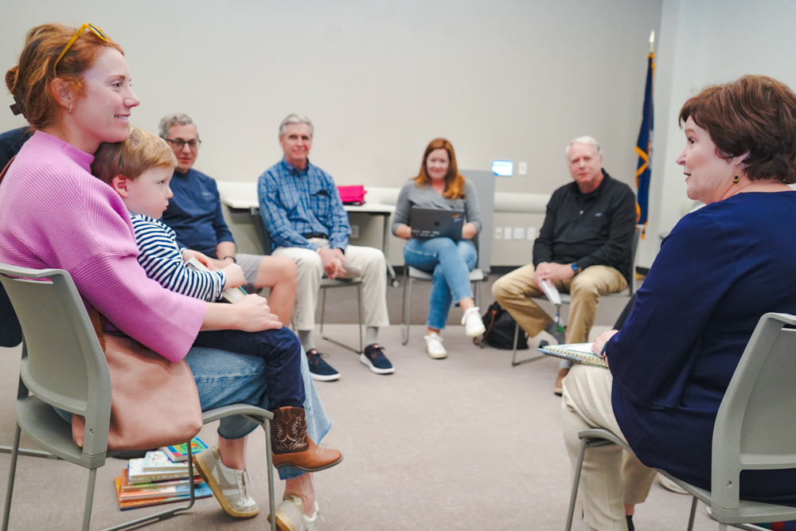
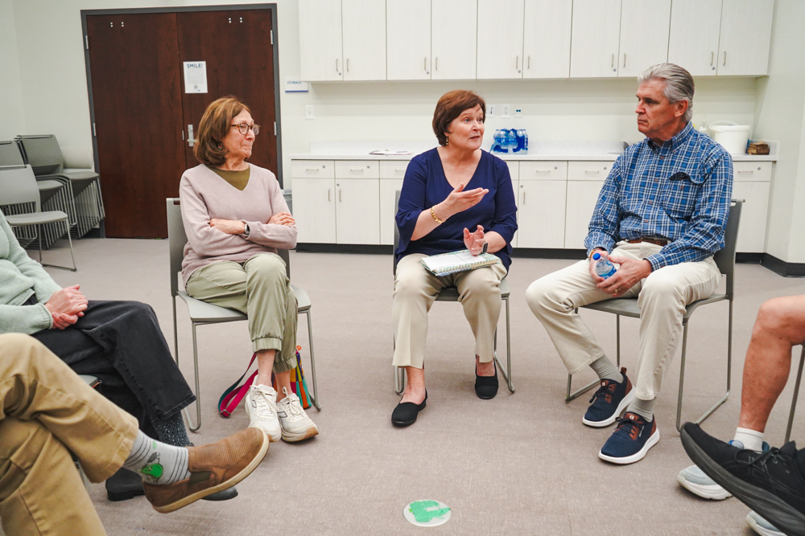
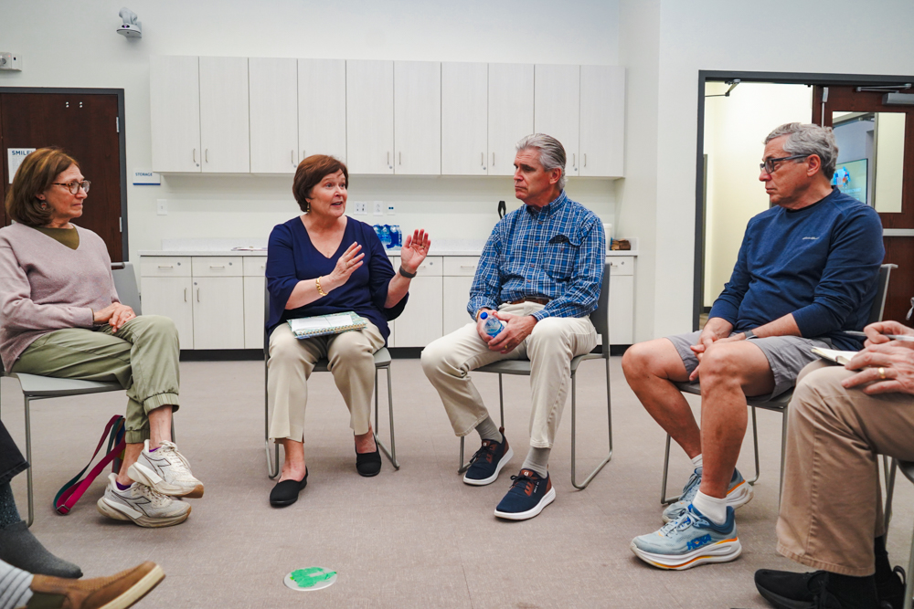

District 1 · Charleston County School Board of Trustees
Char Fitzwater, Ph.D.
Students First. Good Governance Always.
- Advocating for better governance by the CCSD board
- Supporting educators prioritizing student results
- Focused on what constituents want and need for our schools
- Working collaboratively
- De-escalating school board politics

Meet Char
Grandmother. Educator.
Finance Geek. Business Leader. Professor.


My values were shaped by my hero — my dad, part of the Greatest Generation.
I object to hidden agendas that plague our district board and want to see collaborative, positive governance supporting our educators.
Let me be clear, there is a set of values that undergird my priorities – it's the values and perspective of my father, who was an Eagle Scout and who enlisted in the U.S. Navy when he was 17 to serve in WWII. He cared deeply about all his neighbors. It's the values that undergird our constitution…the values of democracy, equal protection under the law and freedom of speech.
I believe public education is the cornerstone of democracy and I plan to stand up for it for the good of our children and the future. My husband, two children and I have all benefited from public education. Five grandchildren are following that same path: two currently in CCSD schools, one in Maryland public schools, and two more to follow.
That's why I'm running. I believe shared governance, community engagement, transparency, and financial oversight matter as the key responsibilities of the school board.
Char Fitzwater, Ph.D., Uniquely Qualified
Education & Leadership
- B.S. Education, Vanderbilt University
- MBA, University of Kansas
- Ph.D., Organization and Management, Capella University
- 22-year business and consulting career: finance & strategy at a Fortune 150 company, CFO/CIO of a regional insurance company
- 20 years teaching business, strategy & finance; served as department chair
- Led successful accreditation of university business programs; retired Professor Emerita, Immaculata University
Financial & Strategy Acumen
- Led cross-functional teams through complex organizational challenges
- Elevated insurance company operations through rigorous financial management, restructuring, and emerging technology
- Mentored student entrepreneurs, including a team that launched a nonprofit serving abused women and their children in Bolivia
Vision for Educational Excellence
- CCSD has made real progress — and Char is committed to building on it
- CCSD ranks 3rd in SC, but SC ranks 41st nationally in K–12 education — there is still a long way to go
- Committed to improving outcomes for all students across CCSD — by supporting the district's proactive efforts and deepening community engagement
Let's put Char's skills and heart to work for the betterment of Charleston County public schools.
Get InvolvedCommunity Input
Your Voice Matters
Char is running to represent District 1, not any political faction. That starts with listening. Share your thoughts on what matters most for Charleston County schools.
Take the Survey
What do you want to see from your school board? What issues matter most to your family? Let Char know — your input will directly shape her priorities.
Share Your Input


Q&A
Answers to Your Questions
If elected, I'll begin work immediately to transform the board governance to back our educators with healthy, shared governance and democratic processes. This will include: 1) embracing community engagement and feedback, 2) increasing transparency and fiscal oversight, and 3) eliminating hidden agendas and partisanism. Simultaneously, I will dig deeply into the district's actions to strengthen the education experiences for our students and support teachers.
As a mother of two with five grandchildren, I clearly support motherhood, and I enjoy a good slice of apple pie! Seriously, I strongly believe public education is the cornerstone of our democracy. I have a set of values that undergird my priorities – the values my father passed on to me. He was an Eagle scout who enlisted in the U.S. Navy when he was 17 to serve in World War II. It's the values articulated in our Constitution – democracy, equal protection under the law and freedom of speech. Public education prepares each new generation to think critically and engage in society as good citizens, voters and neighbors.
In the last several years, I've been an advocate for good education governance by actively monitoring and addressing our district's board. Shared governance, community engagement, transparency and financial oversight should be expected on a nonpartisan board. But as I have said publicly, I have been dismayed by actions taken by five members of our school board. There seem to be hidden agendas and partisanism influencing their actions.
From my education and leadership experience, I can tell you the real work and focus needs to be on strengthening our schools to meet valuable strategic goals and objectives. The district has many plans and actions underway toward achieving its goals. Our educators need our backing and insights. The Return On Investment analytics being built connected with Weighted Student Funding should enable principals and administrators to evaluate the best ways to strengthen results. Furthermore, Superintendent Huggins' administration is already embracing partnerships that strengthen results. Perhaps there are more opportunities to deploy effective programs and leverage partner capabilities.
I bring 40-plus years of education, business and financial leadership experience to this endeavor. As my husband remarks, “Char, you are uniquely qualified.” Thriving students and engaged educators are at the core of great results.
I've heard from parents and educators that students with special needs aren't always getting the support they need. Identifying and serving students who learn differently is both a legal obligation under IDEA and important to ensure every student has what they need to succeed.
The district has a 2026/2027 budget proposal to increase spending in support of special education. I fully support that increase and will seek transparency in how the resources would be deployed, as well as continue to listen closely to families navigating these challenges every day.
Get Involved
Join the Campaign
Support Char
Every contribution helps us reach more voters, spread the message, and put good governance back in the hands of District 1 constituents.
Volunteer & Stay Connected
Knock on doors, make calls, host a coffee, put up a yard sign, or simply share Char's story with your neighbors. Drop your info below and we'll be in touch.
Stay in the Loop
Campaign news, event invitations, and board updates delivered to your inbox.